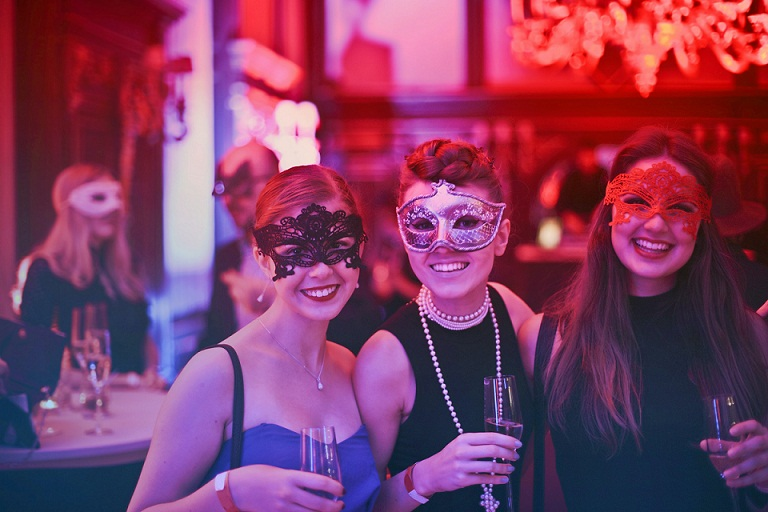
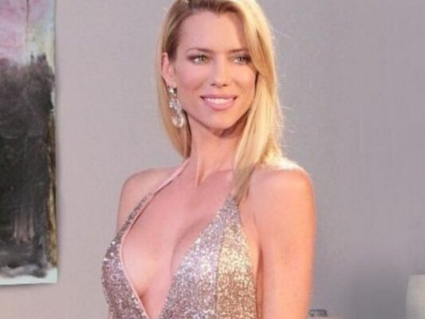

Agencia Integral de Publicidad tradicional y digital
Llevamos tu marca a donde vos quieras...
AN PRODUCCIONES
AN PRODUCCIONES es una Agencia Integral de Publicidad tradicional y digital.
Luego de 30 años en los medios, AN Producciones nace gracias a los amplios contactos y conocimientos adquiridos en este mundo y posteriormente en las redes sociales. AN producciones fue creada por Andrea Naftulewicz, productora Integral de medios, quien después de 20 años decidió abrir su espectro laboral sumando a su experiencia como productora de radio y televisión, LA VENTA PUBLICITARIA Y EL MARKETING DIGITAL.
Estamos en los medios porque somos de los medios.
AN PRODUCCIONES
DONDE QUIERAS ESTAR, AHÍ TE LLEVAMOS...
Servicios
PUBLICIDAD
TELEVISION
El objetivo de la publicidad en televisión es causar impacto visual que se convertirá en una acción del televidente. Pauta en distintos canales y programas de aire o cable en diversos formatos, PNT, mención publicitaria, zócalo animado, publinota, infomerciales o entrevistas.
PUBLICIDAD
RADIOS AM / FM
La radio es ese medio que nunca muere, es un medio de comunicación móvil, manejable y omnipresente que tiene gran alcance en los usuarios. Su aire se respira a través de nuestro contenido como entrevistas, locuciones en off, spots e infomerciales.

PUBLICIDAD
EVENTOS
A veces la solución adecuada es instalar un producto dentro una situación. Te ofrecemos la cobertura de tus eventos de inauguración y ocasiones especiales. También llevamos tu marca a los eventos más importantes del mundo deportivo y del espectáculo.
PUBLICIDAD
VIA PUBLICA Y RUTAS
Los medios tradicionales fuertes en la calle y en los accesos a las ciudades. Como siempre, la gráfica estará acompañada de la estrategia acorde a las necesidades y objetivos del cliente.
PUBLICIDAD
GRÁFICA
La publicidad gráfica tiene un enorme potencial de atracción de la atención del usuario, pone delante de sus ojos cualquier imagen que consiga transmitir el mensaje o provocar la acción deseada. Nuestras propuestas están sustentadas por una estrategia acorde a tus objetivos específicos.
PUBLICIDAD
MEDIOS DIGITALES
La principal ventaja de realizar anuncios en los medios digitales, es que, con poca inversión, es posible generar un gran impacto en los clientes potenciales. Además, nos ofrecen una mayor flexibilidad de formatos. Pauta en Facebook ads, Instagram ads, Google ads, LinkedIn, y más.
PUBLICIDAD
PRODUCCION Y CAMPAÑAS
Te acompañamos en todo el proceso de producción de programas, campañas y spots publicitarios. Realización y grabación de cortos, espacios en medios de comunicación adecuados y contacto directo con celebridades.
ALGUNOS FAMOSOS
ALGUNOS FAMOSOS
Nuestra extensa trayectoria en el medio nos ha premiado con una llegada directa y en confianza con grandes personalidades argentinas. Sin importar cuál sea el propósito de tu estrategia publicitaria, un embajador de marca puede incrementar exponencialmente su alcance y repercusión. Dejá que las celebridades del mundo del espectáculo, el periodismo o el deporte sean quienes tengan a su cargo en sus redes sociales, vender y mostrar lo que ofreces, servicio, producto o profesión.
VERONICA VARANO

NICOLE NEUMANN
MARU BOTANA
HERNAN DRAGO
DENISE DUMAS
Y MUCHOS MÁS
¡Aquí está tu gran oportunidad!
Realizamos un asesoramiento integral y personalizado de marketing en publicidad en los medios. Planteamos propuestas de 360 en publicidad para ayudar al cliente a obtener un mejor resultado en sus objetivos publicitarios.